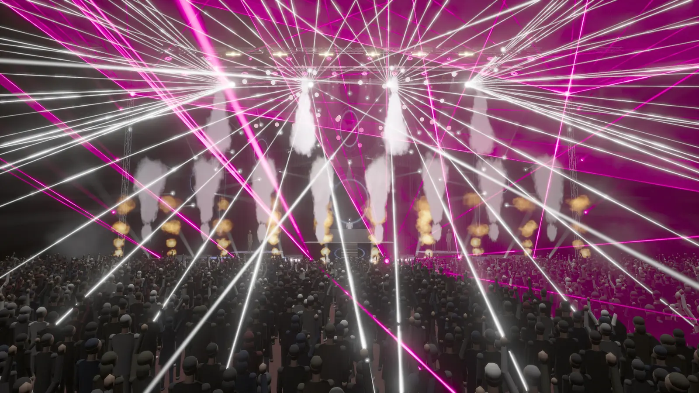
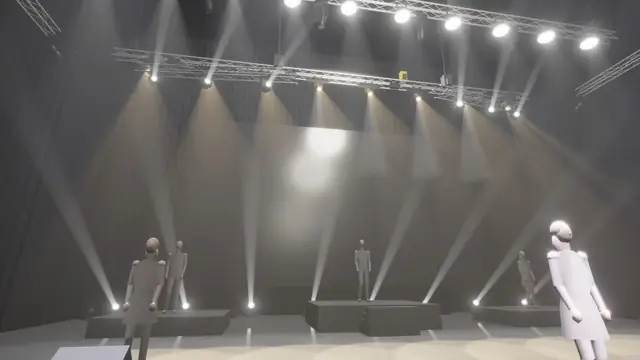
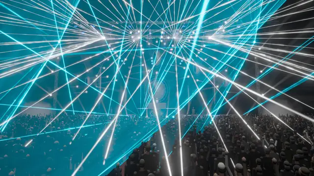
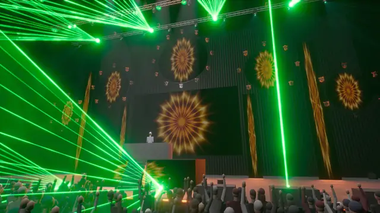
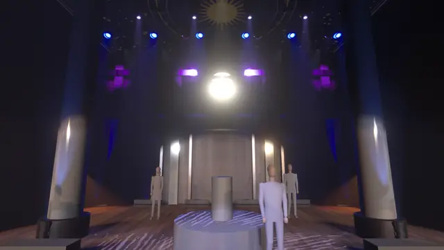
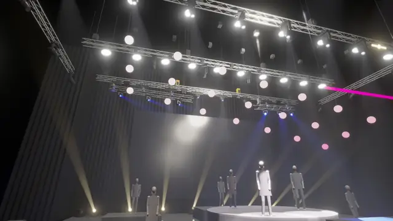

LampOff Studio · Yakında
Masaüstü sürümü hazırlanıyor.
LampOff Studio, LampOff projelerini Windows ve macOS’ta gerçekçi bir 3D sahnede açar: haze içinde hüzme, gobo, lazer, alev, CO2 ve LED ekran. Yayın tarihi bu sayfada duyurulacak.
İlk görüntüler

Konser sahnesi: lazerler, CO2 ve seyirci
Studio’da bir show
Studio’nun zaman çizelgesinden kaydedildi; sesi açık izleyin.
Studio’da neler var








LampOff Studio’nun geliştirme sürümünden; son hâli farklı olabilir.
- Platformlar
- Windows, macOS
- Durum
- Hazırlanıyor
Bu sırada LampOff mobil uygulaması Android, iPhone ve iPad’de:
Sorular için: lampoff.info@gmail.com